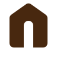
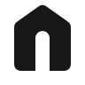
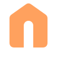
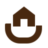
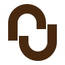
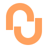

A / Consigliata · accesso e autonomia

Soglia
Una casa, un accesso.
La porta in negativo rende la tessera un punto d’accesso ai servizi. Il segno più essenziale e versatile.



16 px24 px32 px
Simboli proposti per un prodotto autonomo. Calore, geometria e cura del riferimento; una forma propria, oltre la sigla dell’agenzia.

La porta in negativo rende la tessera un punto d’accesso ai servizi. Il segno più essenziale e versatile.




Conserva il gesto di accoglienza del riferimento, ridotto a una culla geometrica. Più umano e immobiliare.


Due elementi aperti costruiscono un legame. Più astratto e indipendente dal settore; meno immediato come casa.
